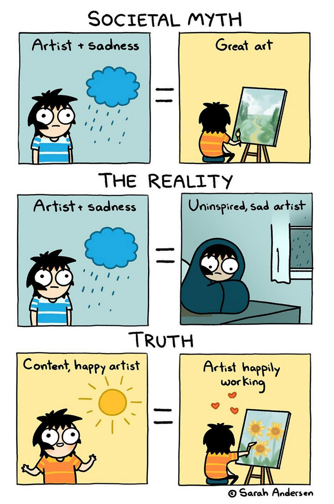

«Everything I’ve ever let go of has claw marks on it.» — David Foster Wallace

The nice thing with instrumental music is that giving titles to songs is maybe trivial and can sometimes be lots of fun.
I had this album's title written down in a list of possible song names that I keep in my notebook. I wasn't really thinking about it until I started seeing the album cover showing up online after I pushed the publish button.
And then it hit me:
«The Last Time I Had Fun (It Was A Long Time Ago)»
When was the last time I had fun? What does it mean to have fun? What the hell is fun?
I make no secret of my life long struggle with depression, anxiety, panic attacks and agoraphobia. I used to be shy about it and keep it to myself as people see it as a weakness. It isn't. Of course it is not.
When I had my first panic attack I was just in my twenties and it scared me shitless. I had no idea what was happening to me. I was living in a relatively small town and I had maybe heard the word depression a few times, always referring to someone no one would dare go near to.
 credits
These days things are a bit better. Mental illness still carries around a stigma but more and more people are aware of what it means to be depressed, to experience debilitating anxiety and so on.
I am still scared shitless of my condition but I've somewhat learned to live with it. I spend most of my days working at home so I don't get easily triggered, except for family or job matters. It's manageable though.
But yeah, I can't remember when it was the last time I've had fun. I've had some. The most fun I have these days is playing music for myself at home. So, in a sense, this is me trying to share some of my fun, knowing that not everyone has fun the same way and most won't like my music, but some will, and it is for those that I do this.
You can listen to The Last Time I Had Fun for free by clicking this link.